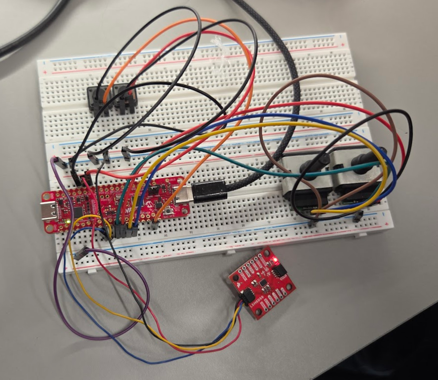
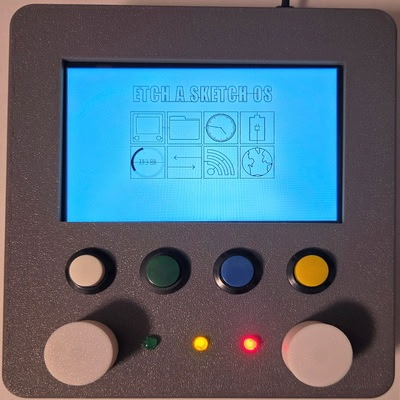
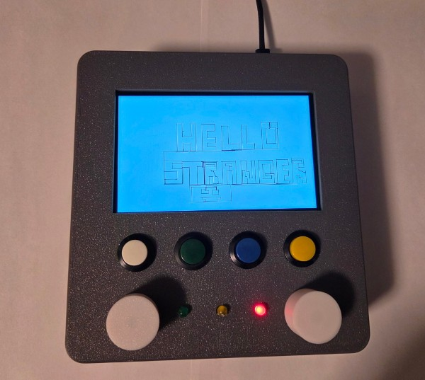
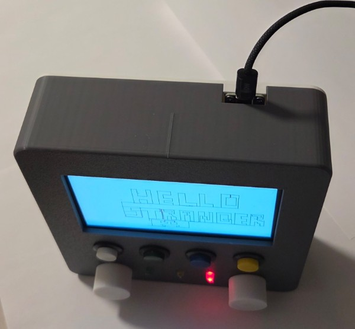
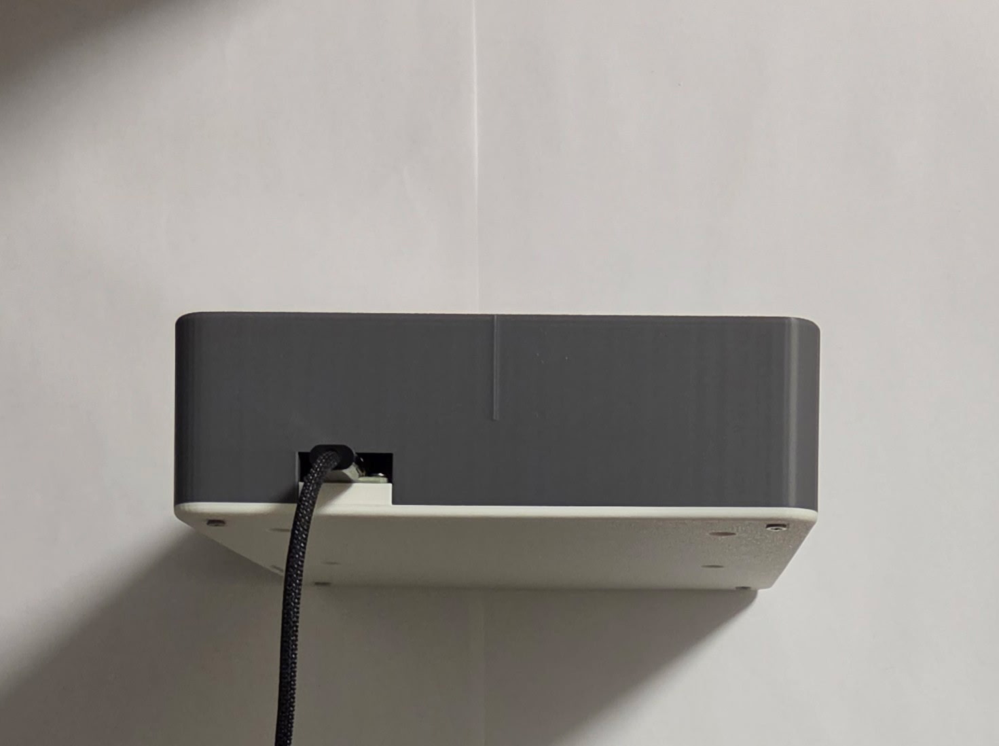
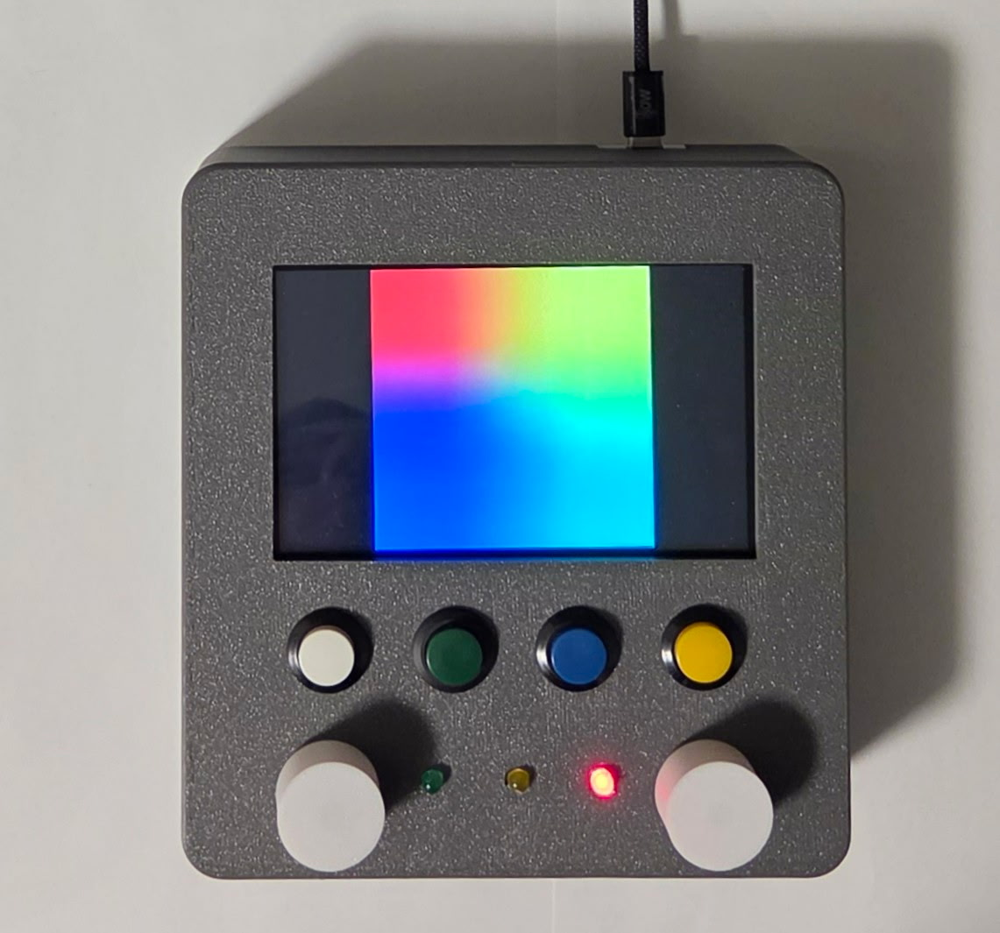
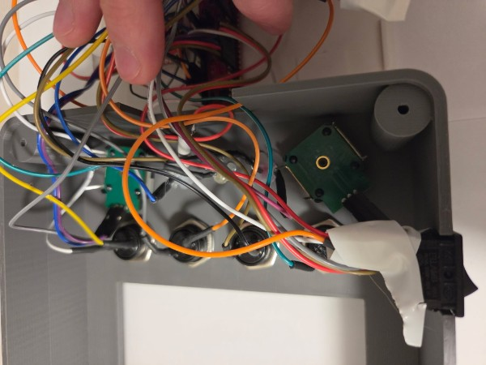
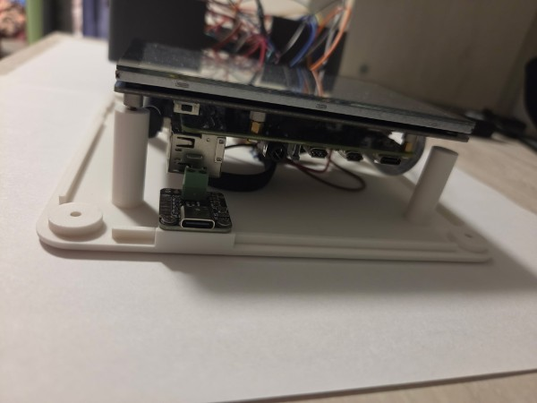
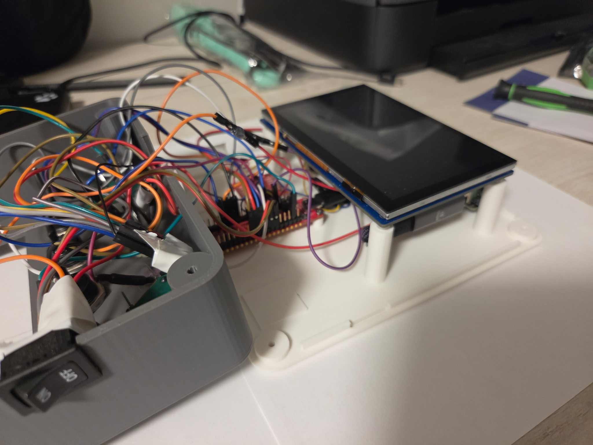
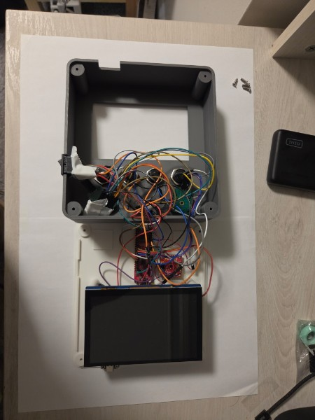

Cameron programmed our AVR64DU32 Curiosity Nano to act as both a USB HID Keyboard and a USB HID Mouse, which required significant manual editing of the USB code MPLAB Code Configurator generated. However, this made it much easier to integrate with our Raspberry Pi and test as since it's then "just a USB device", it can be plugged into basically any computer.
Cameron also wrote a custom I2C implementation in bare metal C to detect prolonged shaking of the device through the LSM6DSO IMU.
| Sensor Action | USB Action |
|---|---|
| Prolonged Shaking of IMU | Ctrl-Z (erases drawing) |
| Left Potentiometer Clockwise Rotation | Cursor to Right |
| Left Potentiometer Counter-Clockwise Rotation | Cursor to Left |
| Right Potentiometer Clockwise Rotation | Cursor Up |
| Right Potentiometer Counter-Clockwise Rotation | Rursor Down |
| Leftmost Button | Left Click |
| Middle-Left Button | Super + K (toggle virtual keyboard) |
| Middle-Right Button | Super + Q (quit active window or open Etch Drawing Program) |
| Rightmost Button | Toggle Left Click Hold (for convenient drawing in non-native apps) |
| LED | Description |
|---|---|
| Green (left) | Flashes when the Etch A Sketch is shaked to indicate the start of the erasing timer |
| Yellow (middle) | Lit while left-click hold is enabled |
| Red (right) | Lit while the AVR is powered and initialized |

Elan made with SolidWorks, an industry-standard CAD tool, an easily 3D-printable two-piece screw-together enclosure with convenient attachments for all our components.
Clayton, with help from Elan, designed the 3D-printable knobs with FreeCAD, an open-source CAD program, to slide onto the rotary encoders.
By utilizing NixOS and nix-wrapper-modules, Clayton was able to create both an operating system image for the Raspberry Pi 4B with all programs pre-installed and configured and a portable binary to run the fully configured desktop environment on any Linux TTY with Nix installed: nix run github:upenn-embedded/final-project-s26-t1#niri-wrapped.
Clayton's custom desktop shell uses the lightweight window manager/Wayland Compositor Niri and the Widget manager Eww to make the Etch A Sketch-like dashboard. The Eww wrapper module was contributed upstream to the nix-wrapper-modules project by Clayton. Additionally, wvkbd is used as a pop-up virtual keyboard to make more complex operations possible. To support this, Niri had to be pinned to a reverted development version.

Clayton used egui/eframe to make a simple drawing program. It required forking egui and WGPU to fix a bug that broke compatibility with Raspberry Pi and other low-power devices.
The program features "always active drawing", enforcing Etch-A-Sketch like drawing. It also automatically saves and reloads drawings and cursor positions so that you can pick up where you left off and








Additional validation video taken by Elan: https://drive.google.com/file/d/1xZBz8Fc3XaYh0jO39mWrX5brnvkHbxKp/view
| ID | Description | Outcome |
|---|---|---|
| SRS-01 | The device shall display and persist user-drawn lines on the display. The cursor shall remain at the boundary of the screen if a user attempts to move it beyond the display coordinates. | Validated, see demonstration video for evidence of this. |
| SRS-02 | The system shall update the cursor position based on simultaneous inputs from both knobs to do diagonal and curved line rendering. | Validated, see demonstration video for evidence of this. |
| SRS-03 | The system shall respond to knob rotations with a display latency of less than 100 milliseconds to ensure real-time user interaction. | Confirmed, see demonstration video for anecdotal evidence. |
| SRS-04 | Upon USB connection to a host PC, such as the MCU for the display, the device shall enumerate as a Human Interface Device (HID) and map knob rotations to mouse-drag and click events. | Partially satisfied, AVR is connected to Raspberry Pi host PC as a HID. See main demonstration video as evidence and photos of inside of case showing USB connection. |
| SRS-05 | The system shall monitor the IMU and trigger a screen-clear event only when a continuous shaking motion is detected for a duration exceeding 1 second. | Validated, see demonstration video of this behavior. |
| SRS-06 | The device shall indicate using separate LEDs whether the device is powered, whether left click hold is enabled, and whether shaking is detected. | Validated, see main video for proof that each of these functions is present. (This requirement is a revision of the original color switch requirement.) |
| ID | Description | Outcome |
|---|---|---|
| HRS-01 | The device shall be powered by a USB power bank and maintain operation for a minimum of 10 minutes under continuous use. | Confirmed, device operated for greater than 10 minutes during the final demo. |
| HRS-02 | The power management circuit shall maintain uninterrupted system operation during the transition of plugging or unplugging a USB-C cable. | Not applicable since USB is not exposed for external computer connection. |
| HRS-03 | A physical power switch shall be integrated to disconnect the battery from all downstream circuitry, resulting in zero current draw (excluding ambient battery discharge). | Confirmed, switch is wired to be between main USB-C power port and Raspberry Pi as shown in photos. |
| HRS-04 | The device enclosure shall feature two knobs positioned at the bottom corners of the display to emulate a mechanical drawing toy. | Validated, see photos of device and validation video. |
| HRS-05 | The rotary encoders used for knobs shall be non-detented to provide smooth, continuous rotation without tactile clicks or bumps. | Validated by physically rotating the knobs and observing no noticeable clicks. Furthermore, the Bourns rotary encoders we used do not have detents. |
| HRS-06 | The device chassis and internal component mounting shall withstand shaking without loss of electrical connectivity or functional failure. | Validated, see demonstration that device continues to function after shaking in the main video. |
| Question | Response |
|---|---|
| What did you learn from it? | We learned a great deal about USB and the complexities of building a device that uses this protocol instead of a simpler protocol like I2C. The desire to use USB informed many of our design decisions, and we had to understand the report structure for USB human interface devices to successfully communicate. |
| What went well? | Our planning for unforeseen circumstances such as the e-ink display not arriving before the deadline provided to be quite useful, since this did unfortunately end up occuring. Because we had been careful to acquire an alternative 6" TFT display to be driven by the Raspberry Pi, we were able to present a polished project at the final demo. |
| What accomplishments are you proud of? | We are proud of the custom Etch-a-Sketch OS, since its functionality goes far beyond or original expectations/goals for the project. The OS supports browsing websites, which can be useful for playing drawing games such as Skribbl.io, Wi-Fi configuration, file storage, and even a clock in the main menu. This is a very special part of the project for us, and we are quite proud of it. |
| Did you have to change your approach? | We originally planned to use an e-ink diplay due to its ability to replicate the same look and feel as an original Etch-a-Sketch. We realized early on in the project, however, that the refresh rate would be greater than 3Hz for many displays, making the design unfeasable for us. This changed, however, when we discoverd the Modos 7" Dev Kit, which has a refresh rate of up to 75Hz. We were not able to obtain the display in time, but our backup plan with a 6" TFT display was already in place when this became apparent. |
| What could have been done differently? | We could have used I2C to communicate between the Raspberry Pi and AVR to allow for additional connectivity via USB to a host PC. The primary reason us not going this route was to avoid time cost and redundancy.. in retrospect, using I2C between the RPI and AVR would have been straightforward to switch to, but certainly easier if this decision was made earlier on in the process. |
| What could be the next step for this project? | We would like to improve the device mainly in its hardware by swapping the TFT display to a high-refresh rate e-ink display. We would also like to improve the wiring in some parts of the device. Lastly, we could improve the usability of the OS, prioritizing the 4 buttons and 2 knobs we are able to reprogram. |